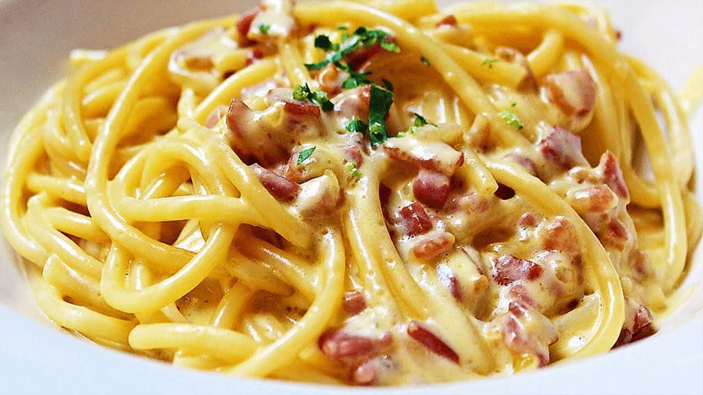

Paste carbonara

Carbonara este un fel de mâncare cu pasta originar din Roma, Italia. Se face cu ouă, brânză tare, carne de porc și piper negru. Și-a căpătat numele actual „carbonara” la mijlocul secolului XX.
Brânza folosită pentru această mâncare este de obicei Pecorino Romano, Parmezan sau o combinație a celor două.Spaghetele sunt cele mai frecvente paste, dar se folosesc și fettuccine, rigatoni, linguine sau bucatini. În mod normal, guanciale (obraji de porc) sau pancetta sunt folosiți pentru componența cărnii, dar slănină afumată este un substitut comun în afara Italiei.
Ingrediente
- 200g spaghete
- 200g smantana
- 100g bacon
- 3 oua
- ulei de masline
- sare
- piper
Mod de preparare
- Se fierb pastele în apă cu sare conform instrucțiunilor de pe pachet. Se limpezesc în jet de apă rece și se lasă la scurs.Se fierb pastele în apă cu sare conform instrucțiunilor de pe pachet. Se limpezesc în jet de apă rece și se lasă la scurs.
- Baconul se taie cubulețe și se prăjește în 3 linguri de ulei, până se rumenește.
- Smântâna se amestecă cu gălbenușurile, sare și piper. Se toarnă amestecul peste bacon și se mai fierbe un minut.
- Se pun pastele peste sos și se amestecă.
- Se servesc fierbinți cu parmezan ras.
Inapoi la retete